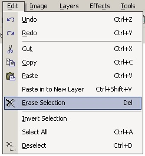

Erase Selection Operation
|
 The Erase Selection Operation (Edit-->Erase Selection) allows for the removal of a selected portion of the active layer. You can select a portion of the layer using either the Rectangle Select or the Lasso Select. Once the Erase Selection Operation is executed the selected region upon the layer becomes 100% transparent. In other words, the selected region is 'erased' from the layer. Notice, this does not mimic the Cut Operation exactly. Nothing will be saved to the clipboard. To better illustrate the cut operation, consider the images below. |
|
|
|
| This image consists of two layers. Notice on the topmost layer (the graphic closest to you), there is a rectangular selection region. | Once the selected region is 'erased', you can see the layer underneath (i.e., the erased region is 100% transparent). |